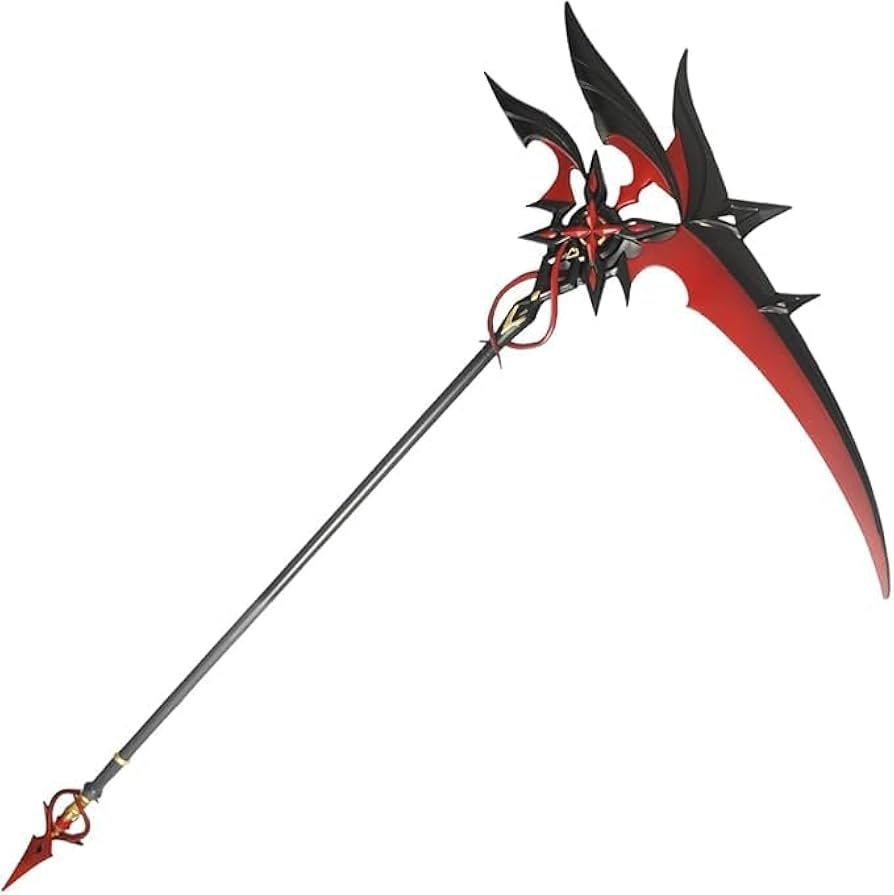
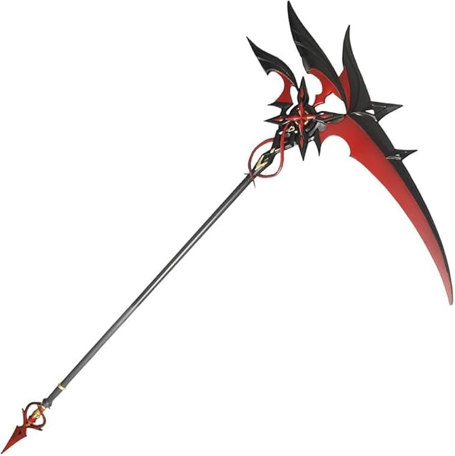
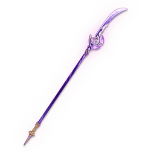

Lanças Notáveis
Semblante da Lua Carmesim
Descrição: Esta lança é associada à força e à devoção, com sua habilidade de drenar vida. Com um design inspirado pela lua e pelo sangue, ela é capaz de se tornar um símbolo de poder implacável e resistência no campo de batalha.
Passiva Secreta: Se usada pelo portador correto, durante o combate se transforma em uma foice, libertando o máximo de seu poder.
 

Engulfing Lightning
Descrição: Esta lança é associada à força e à devoção, com sua habilidade de drenar vida. Com um design inspirado pela lua e pelo sangue, ela é capaz de se tornar um símbolo de poder implacável e resistência no campo de batalha.
Passiva Secreta: Se usada pelo portador correto, após uma extrema liberação de poder, se transforma na Espada Lendária Cortadora da Neblina Reforjada fazendo com que seus golpes cortem as barreiras do espaço tempo. Pórem só pode ser usada apenas por 10 segundos
